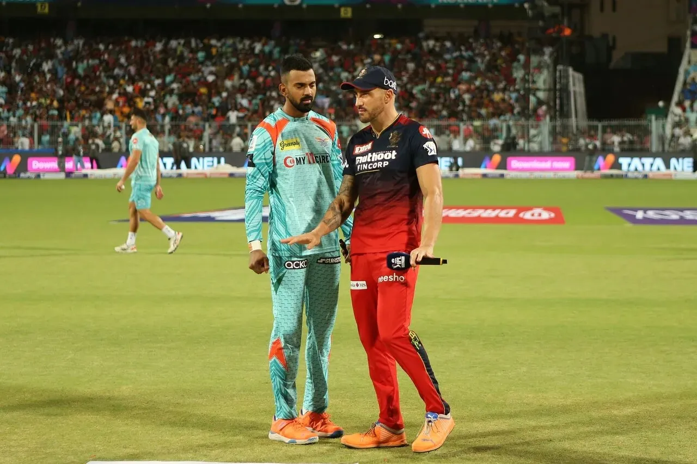

RCB vs LSG Match Live
After Mumbai Indians were beaten by Chennai Superkings by 5 wickets and 31 balls to spare , their chances to qualify for the playoffs are literally over which means they are the second team to get knocked out from IPL 2022 after Mumbai Indians. This also means that we are left with 8 teams who can still qualify for the playoffs. We will take a look at each team with what they need to do from here to make it to the playoffs.
In the news
Washington Sundar and Natarajan were forced to sit out with injuries in Sunrisers' previous match against Delhi Capitals. Head coach Tom Moody said they will be reviewing Washington and "there's a chance he will be available for the next [RCB] game". Natarajan meanwhile is likely to be available only for Sunrisers' match against Kolkata Knight Riders on May 14, Moody said.
Likely XIs
Royal Challengers Bangalore: 1 Faf du Plessis (capt), 2 Virat Kohli, 3 Rajat Patidar, 4 Glenn Maxwell, 5 Shahbaz Ahmed, 6 Mahipal Lomror, 7 Dinesh Karthik (wk), 8 Wanindu Hasaranga, 9 Harshal Patel, 10 Mohammed Siraj, 11 Josh Hazlewood
Lucknow Super Giants: 1 K L Rahul (capt), 2 Quinton De Kock(wk) , 3 Deepak Hooda, 4 Evin Lewis, 5 Ayush Badoni , 6 Jason Holder, 7 Krunal Pandya, 8 Marcus Stoinis 9. Avesh Khan, 10. Dushmantha Chameera, 11 Ravi Bishnoi
Spotlight on Faf du Plessis and KL Rahul as IPL playoffs race heats up
Big Picture
The playoffs race has started heating up and these two teams are in the thick of it. Royal Challengers Bangalore found a way to bounce back after three losses with a win against Chennai Super Kings in their previous match. LSG, who are coming into this game losing three in a row, will be looking for that win to get back in the top four.
While the Virat Kohli-Rahul bromance is one part of the narrative, both the stalwarts have been enduring a rough patch this season. Their scoring rates are also hurting their respective teams. Rahul's form has been among the major concerns for LSG - he has scored 616 runs in 15 games, and his strike rate of 138.38 is the great for a batter who has faced a minimum of 150 balls this season. And Kohli is second on this list, with a strike rate of 111.9. He has not found a way out of his batting slump yet - he has scored 307 runs in 16 games at an average of 27.90 - and has continued to struggle against spin.
Watch IPL live in the Eden Garden Kolkata Watch Lucknow Super Giants vs Royal Challengers Bangalore on ESPN+ in English and in Hindi.
If at all the previous encounter between these sides is a testament to what LSG are capable of, Royal Challengers will want to capitalise on their winning momentum to seek the perfect revenge. But Marco Jansen, who was instrumental in bowling Royal Challengers out for 68 in that game has been dropped following expensive returns in the last few games. Royal Challengers have also found an able uncapped pair in Rajat Patidar and Mahipal Lomror who have spruced up the batting. Josh Hazlewood and Harshal Patel have shown great control at the death on more than one occasion. But, they will be expecting more from their captain Faf du Plessis, who has also been struggling to find consistency this season.